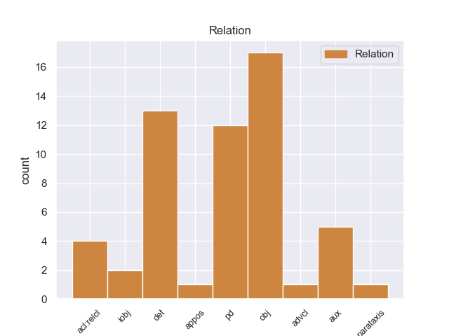
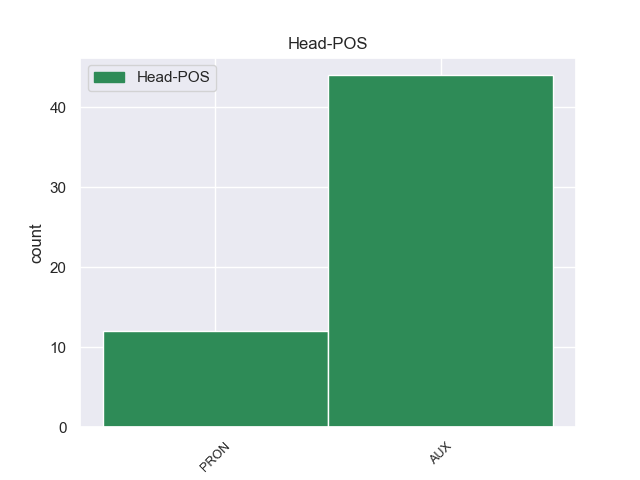
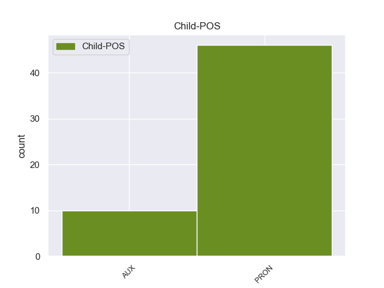

Distribution of features within this leaf



Agreement Rules sorted by frequency.
- When the dependent token is the object(obj) of the head token, and the head token is AUX and the dependent token is PRON.
1 πρόκειται _ _ _ _ 0 _ _ _
2 για _ _ _ _ 0 _ _ _
3 αυτό _ _ _ _ 0 _ _ _
4 το _ _ _ _ 0 _ _ _
5 οποίο _ _ _ _ 0 _ _ _
6 αποκαλύφθηκε _ _ _ _ 0 _ _ _
7 κατά _ _ _ _ 0 _ _ _
8 τη _ _ _ _ 0 _ _ _
9 διάρκεια _ _ _ _ 0 _ _ _
10 αυτής _ _ _ _ 0 _ _ _
11 της _ _ _ _ 0 _ _ _
12 διαδικασίας _ _ _ _ 0 _ _ _
13 , _ _ _ _ 0 _ _ _
14 ότι _ _ _ _ 0 _ _ _
15 ο _ _ _ _ 0 _ _ _
16 Εισαγγελέας _ _ _ _ 0 _ _ _
17 κάποια _ _ _ _ 0 _ _ _
18 στιγμή _ _ _ _ 0 _ _ _
19 ζήτησε _ _ _ _ 0 _ _ _
20 από _ _ _ _ 0 _ _ _
21 την _ _ _ _ 0 _ _ _
22 Πρόεδρο _ _ _ _ 0 _ _ _
23 του _ _ _ _ 0 _ _ _
24 Σώματος _ _ _ _ 0 _ _ _
25 , _ _ _ _ 0 _ _ _
26 την _ _ _ _ 0 _ _ _
27 προκάτοχό _ _ _ _ 0 _ _ _
28 σας _ _ _ _ 0 _ _ _
29 , _ _ _ _ 0 _ _ _
30 λεπτομέρειες _ _ _ _ 0 _ _ _
31 για _ _ _ _ 0 _ _ _
32 την _ _ _ _ 0 _ _ _
33 ψήφο _ _ _ _ 0 _ _ _
34 που που PRON -- Case=Acc|Gender=Fem|Number=Sing|Person=3|PronType=Rel 35 obj _ _
35 έχουν έχω AUX -- Aspect=Imp|Mood=Ind|Number=Plur|Person=3|Tense=Pres|VerbForm=Fin|Voice=Act 0 _ _ _
36 δώσει _ _ _ _ 0 _ _ _
37 οι _ _ _ _ 0 _ _ _
38 δύο _ _ _ _ 0 _ _ _
39 συγκεκριμένοι _ _ _ _ 0 _ _ _
40 βουλευτές _ _ _ _ 0 _ _ _
41 προκειμένου _ _ _ _ 0 _ _ _
42 να _ _ _ _ 0 _ _ _
43 διευκρινιστεί _ _ _ _ 0 _ _ _
44 περαιτέρω _ _ _ _ 0 _ _ _
45 η _ _ _ _ 0 _ _ _
46 πιθανότητα _ _ _ _ 0 _ _ _
47 να _ _ _ _ 0 _ _ _
48 είχαν _ _ _ _ 0 _ _ _
49 ασκήσει _ _ _ _ 0 _ _ _
50 αθέμιτη _ _ _ _ 0 _ _ _
51 επιρροή _ _ _ _ 0 _ _ _
52 . _ _ _ _ 0 _ _ _
1 Αυτή αυτός PRON -- Case=Nom|Gender=Fem|Number=Sing|Person=3|PronType=Dem 2 PD _ _
2 είναι είμαι AUX -- Aspect=Imp|Mood=Ind|Number=Sing|Person=3|Tense=Pres|VerbForm=Fin|Voice=Pass 0 _ _ _
3 η _ _ _ _ 0 _ _ _
4 κατάσταση _ _ _ _ 0 _ _ _
5 επί _ _ _ _ 0 _ _ _
6 της _ _ _ _ 0 _ _ _
7 οποίας _ _ _ _ 0 _ _ _
8 πρέπει _ _ _ _ 0 _ _ _
9 να _ _ _ _ 0 _ _ _
10 αποφασίσουμε _ _ _ _ 0 _ _ _
11 . _ _ _ _ 0 _ _ _
1 Ωστόσο _ _ _ _ 0 _ _ _
2 , _ _ _ _ 0 _ _ _
3 κάτι κάτι PRON -- Case=Nom|Gender=Neut|Number=Sing|Person=3|PronType=Ind 0 _ _ _
4 τέτοιο τέτοιος PRON -- Case=Nom|Gender=Neut|Number=Sing|Person=3|PronType=Dem 3 det _ _
5 απαιτεί _ _ _ _ 0 _ _ _
6 ξεκάθαρες _ _ _ _ 0 _ _ _
7 ενδείξεις _ _ _ _ 0 _ _ _
8 από _ _ _ _ 0 _ _ _
9 πλευράς _ _ _ _ 0 _ _ _
10 Βόρειας _ _ _ _ 0 _ _ _
11 Κορέας _ _ _ _ 0 _ _ _
12 , _ _ _ _ 0 _ _ _
13 που _ _ _ _ 0 _ _ _
14 μέχρι _ _ _ _ 0 _ _ _
15 τώρα _ _ _ _ 0 _ _ _
16 δεν _ _ _ _ 0 _ _ _
17 έχουν _ _ _ _ 0 _ _ _
18 εμφανιστεί _ _ _ _ 0 _ _ _
19 . _ _ _ _ 0 _ _ _
1 Πρότεινε _ _ _ _ 0 _ _ _
2 να _ _ _ _ 0 _ _ _
3 επιτεθούν _ _ _ _ 0 _ _ _
4 μαζί _ _ _ _ 0 _ _ _
5 με _ _ _ _ 0 _ _ _
6 άλλους _ _ _ _ 0 _ _ _
7 επαναστάτες _ _ _ _ 0 _ _ _
8 που _ _ _ _ 0 _ _ _
9 ήταν _ _ _ _ 0 _ _ _
10 σ _ _ _ _ 0 _ _ _
11 το _ _ _ _ 0 _ _ _
12 Ακρωτήρι _ _ _ _ 0 _ _ _
13 , _ _ _ _ 0 _ _ _
14 σ _ _ _ _ 0 _ _ _
15 τους _ _ _ _ 0 _ _ _
16 Τούρκους _ _ _ _ 0 _ _ _
17 και _ _ _ _ 0 _ _ _
18 να _ _ _ _ 0 _ _ _
19 τους _ _ _ _ 0 _ _ _
20 εκτοπίσουν _ _ _ _ 0 _ _ _
21 από _ _ _ _ 0 _ _ _
22 την _ _ _ _ 0 _ _ _
23 πεδιάδα _ _ _ _ 0 _ _ _
24 ( _ _ _ _ 0 _ _ _
25 η _ _ _ _ 0 _ _ _
26 Μαλάξα _ _ _ _ 0 _ _ _
27 είναι είμαι AUX -- Aspect=Imp|Mood=Ind|Number=Sing|Person=3|Tense=Pres|VerbForm=Fin|Voice=Pass 0 _ _ _
28 σε _ _ _ _ 0 _ _ _
29 κάποιο κάποιος PRON -- Case=Acc|Gender=Neut|Number=Sing|Person=3|PronType=Ind 27 det _ _
30 υψόμετρο _ _ _ _ 0 _ _ _
31 ) _ _ _ _ 0 _ _ _
32 . _ _ _ _ 0 _ _ _
1 το _ _ _ _ 0 _ _ _
2 ένα _ _ _ _ 0 _ _ _
3 το _ _ _ _ 0 _ _ _
4 επισημάνατε _ _ _ _ 0 _ _ _
5 , _ _ _ _ 0 _ _ _
6 και _ _ _ _ 0 _ _ _
7 είναι είμαι AUX -- Aspect=Imp|Mood=Ind|Number=Sing|Person=3|Tense=Pres|VerbForm=Fin|Voice=Pass 9 AUX _ _
8 ότι _ _ _ _ 0 _ _ _
9 πρέπει πρέπει AUX -- Aspect=Imp|Mood=Ind|Number=Sing|Person=3|Tense=Pres|VerbForm=Fin|Voice=Act 0 _ _ _
10 οι _ _ _ _ 0 _ _ _
11 συζητήσεις _ _ _ _ 0 _ _ _
12 μας _ _ _ _ 0 _ _ _
13 να _ _ _ _ 0 _ _ _
14 γίνουν _ _ _ _ 0 _ _ _
15 πιο _ _ _ _ 0 _ _ _
16 ζωντανές _ _ _ _ 0 _ _ _
17 και _ _ _ _ 0 _ _ _
18 ενδιαφέρουσες _ _ _ _ 0 _ _ _
19 . _ _ _ _ 0 _ _ _
1 Φυσικά _ _ _ _ 0 _ _ _
2 πρέπει _ _ _ _ 0 _ _ _
3 να _ _ _ _ 0 _ _ _
4 θεσπιστούν _ _ _ _ 0 _ _ _
5 προστασίες _ _ _ _ 0 _ _ _
6 ώστε _ _ _ _ 0 _ _ _
7 να _ _ _ _ 0 _ _ _
8 διασφαλιστεί _ _ _ _ 0 _ _ _
9 ότι _ _ _ _ 0 _ _ _
10 αυτοί αυτός PRON -- Case=Nom|Gender=Masc|Number=Plur|Person=3|PronType=Dem 0 _ _ _
11 που _ _ _ _ 0 _ _ _
12 είναι είμαι AUX -- Aspect=Imp|Mood=Ind|Number=Plur|Person=3|Tense=Pres|VerbForm=Fin|Voice=Pass 10 acl:relcl _ _
13 ένοχοι _ _ _ _ 0 _ _ _
14 για _ _ _ _ 0 _ _ _
15 παρανομίες _ _ _ _ 0 _ _ _
16 , _ _ _ _ 0 _ _ _
17 απάτη _ _ _ _ 0 _ _ _
18 , _ _ _ _ 0 _ _ _
19 κομπίνες _ _ _ _ 0 _ _ _
20 και _ _ _ _ 0 _ _ _
21 για _ _ _ _ 0 _ _ _
22 αδικήματα _ _ _ _ 0 _ _ _
23 εις _ _ _ _ 0 _ _ _
24 βάρος _ _ _ _ 0 _ _ _
25 της _ _ _ _ 0 _ _ _
26 περιουσίας _ _ _ _ 0 _ _ _
27 και _ _ _ _ 0 _ _ _
28 των _ _ _ _ 0 _ _ _
29 οικονομικών _ _ _ _ 0 _ _ _
30 της _ _ _ _ 0 _ _ _
31 Κοινότητας _ _ _ _ 0 _ _ _
32 πρέπει _ _ _ _ 0 _ _ _
33 να _ _ _ _ 0 _ _ _
34 αποκλείονται _ _ _ _ 0 _ _ _
35 από _ _ _ _ 0 _ _ _
36 τις _ _ _ _ 0 _ _ _
37 δημόσιες _ _ _ _ 0 _ _ _
38 συμβάσεις _ _ _ _ 0 _ _ _
39 . _ _ _ _ 0 _ _ _
1 Σε _ _ _ _ 0 _ _ _
2 τελική _ _ _ _ 0 _ _ _
3 ανάλυση _ _ _ _ 0 _ _ _
4 , _ _ _ _ 0 _ _ _
5 σ _ _ _ _ 0 _ _ _
6 το _ _ _ _ 0 _ _ _
7 παράδειγμα _ _ _ _ 0 _ _ _
8 του _ _ _ _ 0 _ _ _
9 Λουξεμβούργου _ _ _ _ 0 _ _ _
10 είναι είμαι AUX -- Aspect=Imp|Mood=Ind|Number=Plur|Person=3|Tense=Pres|VerbForm=Fin|Voice=Pass 0 _ _ _
11 και _ _ _ _ 0 _ _ _
12 οι _ _ _ _ 0 _ _ _
13 δύο _ _ _ _ 0 _ _ _
14 χαμένοι _ _ _ _ 0 _ _ _
15 , _ _ _ _ 0 _ _ _
16 κάτι κάτι PRON -- Case=Acc|Gender=Neut|Number=Sing|Person=3|PronType=Ind 10 appos _ _
17 που _ _ _ _ 0 _ _ _
18 επισημάναμε _ _ _ _ 0 _ _ _
19 ακόμα _ _ _ _ 0 _ _ _
20 μια _ _ _ _ 0 _ _ _
21 φορά _ _ _ _ 0 _ _ _
22 σ _ _ _ _ 0 _ _ _
23 την _ _ _ _ 0 _ _ _
24 Επιτροπή _ _ _ _ 0 _ _ _
25 με _ _ _ _ 0 _ _ _
26 την _ _ _ _ 0 _ _ _
27 περιβόητη _ _ _ _ 0 _ _ _
28 έκθεση _ _ _ _ 0 _ _ _
29 van _ _ _ _ 0 _ _ _
30 Dam _ _ _ _ 0 _ _ _
31 . _ _ _ _ 0 _ _ _
1 Έρευνα _ _ _ _ 0 _ _ _
2 για _ _ _ _ 0 _ _ _
3 την _ _ _ _ 0 _ _ _
4 απασχόληση _ _ _ _ 0 _ _ _
5 , _ _ _ _ 0 _ _ _
6 του _ _ _ _ 0 _ _ _
7 ομίλου _ _ _ _ 0 _ _ _
8 παροχής _ _ _ _ 0 _ _ _
9 υπηρεσιών _ _ _ _ 0 _ _ _
10 ανθρώπινου _ _ _ _ 0 _ _ _
11 δυναμικού _ _ _ _ 0 _ _ _
12 " _ _ _ _ 0 _ _ _
13 Adecco _ _ _ _ 0 _ _ _
14 " _ _ _ _ 0 _ _ _
15 , _ _ _ _ 0 _ _ _
16 έδειξε _ _ _ _ 0 _ _ _
17 ότι _ _ _ _ 0 _ _ _
18 " _ _ _ _ 0 _ _ _
19 το _ _ _ _ 0 _ _ _
20 49% _ _ _ _ 0 _ _ _
21 των _ _ _ _ 0 _ _ _
22 ερωτηθέντων _ _ _ _ 0 _ _ _
23 ανέφερε _ _ _ _ 0 _ _ _
24 ότι _ _ _ _ 0 _ _ _
25 τη _ _ _ _ 0 _ _ _
26 συγκεκριμένη _ _ _ _ 0 _ _ _
27 χρονική _ _ _ _ 0 _ _ _
28 περίοδο _ _ _ _ 0 _ _ _
29 αναζητά _ _ _ _ 0 _ _ _
30 εργασία _ _ _ _ 0 _ _ _
31 σ _ _ _ _ 0 _ _ _
32 το _ _ _ _ 0 _ _ _
33 εξωτερικό _ _ _ _ 0 _ _ _
34 , _ _ _ _ 0 _ _ _
35 με _ _ _ _ 0 _ _ _
36 ένα _ _ _ _ 0 _ _ _
37 3% _ _ _ _ 0 _ _ _
38 να _ _ _ _ 0 _ _ _
39 δηλώνει _ _ _ _ 0 _ _ _
40 ότι _ _ _ _ 0 _ _ _
41 του εγώ PRON -- Case=Gen|Gender=Masc|Number=Sing|Person=3|PronType=Prs 42 iobj _ _
42 έχει έχω AUX -- Aspect=Imp|Mood=Ind|Number=Sing|Person=3|Tense=Pres|VerbForm=Fin|Voice=Act 0 _ _ _
43 ήδη _ _ _ _ 0 _ _ _
44 προταθεί _ _ _ _ 0 _ _ _
45 εργασία _ _ _ _ 0 _ _ _
46 σε _ _ _ _ 0 _ _ _
47 άλλη _ _ _ _ 0 _ _ _
48 χώρα _ _ _ _ 0 _ _ _
49 . _ _ _ _ 0 _ _ _
1 Ο _ _ _ _ 0 _ _ _
2 χειρότερος _ _ _ _ 0 _ _ _
3 σεισμός _ _ _ _ 0 _ _ _
4 των _ _ _ _ 0 _ _ _
5 τελευταίων _ _ _ _ 0 _ _ _
6 30 _ _ _ _ 0 _ _ _
7 ετών _ _ _ _ 0 _ _ _
8 σ _ _ _ _ 0 _ _ _
9 την _ _ _ _ 0 _ _ _
10 Ιταλία _ _ _ _ 0 _ _ _
11 αφήνει _ _ _ _ 0 _ _ _
12 σεισμόπληκτους _ _ _ _ 0 _ _ _
13 σε _ _ _ _ 0 _ _ _
14 26 _ _ _ _ 0 _ _ _
15 πόλεις _ _ _ _ 0 _ _ _
16 και _ _ _ _ 0 _ _ _
17 χωριά _ _ _ _ 0 _ _ _
18 , _ _ _ _ 0 _ _ _
19 εκατοντάδες _ _ _ _ 0 _ _ _
20 τραυματίες _ _ _ _ 0 _ _ _
21 σ _ _ _ _ 0 _ _ _
22 το _ _ _ _ 0 _ _ _
23 νοσοκομείο _ _ _ _ 0 _ _ _
24 της _ _ _ _ 0 _ _ _
25 πόλης _ _ _ _ 0 _ _ _
26 , _ _ _ _ 0 _ _ _
27 που _ _ _ _ 0 _ _ _
28 και _ _ _ _ 0 _ _ _
29 αυτό αυτός PRON -- Case=Nom|Gender=Neut|Number=Sing|Person=3|PronType=Dem 30 advcl _ _
30 έχει έχω AUX -- Aspect=Imp|Mood=Ind|Number=Sing|Person=3|Tense=Pres|VerbForm=Fin|Voice=Act 0 _ _ _
31 υποστεί _ _ _ _ 0 _ _ _
32 ζημιές _ _ _ _ 0 _ _ _
33 και _ _ _ _ 0 _ _ _
34 κάπου _ _ _ _ 0 _ _ _
35 15.000 _ _ _ _ 0 _ _ _
36 « _ _ _ _ 0 _ _ _
37 κόκκινα _ _ _ _ 0 _ _ _
38 » _ _ _ _ 0 _ _ _
39 κτίρια _ _ _ _ 0 _ _ _
40 . _ _ _ _ 0 _ _ _
1 Είναι είμαι AUX -- Aspect=Imp|Mood=Ind|Number=Sing|Person=3|Tense=Pres|VerbForm=Fin|Voice=Pass 0 _ _ _
2 κάτι _ _ _ _ 0 _ _ _
3 σ _ _ _ _ 0 _ _ _
4 το _ _ _ _ 0 _ _ _
5 οποίο _ _ _ _ 0 _ _ _
6 πρέπει πρέπει AUX -- Aspect=Imp|Mood=Ind|Number=Sing|Person=3|Tense=Pres|VerbForm=Fin|Voice=Act 1 acl:relcl _ _
7 να _ _ _ _ 0 _ _ _
8 δώσουμε _ _ _ _ 0 _ _ _
9 μεγάλη _ _ _ _ 0 _ _ _
10 προσοχή _ _ _ _ 0 _ _ _
11 . _ _ _ _ 0 _ _ _
Disagree Examples:
1 Γι' _ _ _ _ 0 _ _ _
2 αυτό _ _ _ _ 0 _ _ _
3 το _ _ _ _ 0 _ _ _
4 λόγο _ _ _ _ 0 _ _ _
5 - _ _ _ _ 0 _ _ _
6 όπως _ _ _ _ 0 _ _ _
7 είπατε _ _ _ _ 0 _ _ _
8 - _ _ _ _ 0 _ _ _
9 μας εγώ PRON -- Case=Gen|Gender=Masc|Number=Plur|Person=1|PronType=Prs 10 iobj _ _
10 είναι είμαι AUX -- Aspect=Imp|Mood=Ind|Number=Sing|Person=3|Tense=Pres|VerbForm=Fin|Voice=Pass 0 _ _ _
11 δύσκολο _ _ _ _ 0 _ _ _
12 να _ _ _ _ 0 _ _ _
13 δεχτούμε _ _ _ _ 0 _ _ _
14 τον _ _ _ _ 0 _ _ _
15 τρόπο _ _ _ _ 0 _ _ _
16 με _ _ _ _ 0 _ _ _
17 τον _ _ _ _ 0 _ _ _
18 οποίο _ _ _ _ 0 _ _ _
19 λήφθηκαν _ _ _ _ 0 _ _ _
20 σ _ _ _ _ 0 _ _ _
21 τις _ _ _ _ 0 _ _ _
22 27_Δεκεμβρίου _ _ _ _ 0 _ _ _
23 οι _ _ _ _ 0 _ _ _
24 αποφάσεις _ _ _ _ 0 _ _ _
25 σχετικά _ _ _ _ 0 _ _ _
26 με _ _ _ _ 0 _ _ _
27 τα _ _ _ _ 0 _ _ _
28 τέσσερα _ _ _ _ 0 _ _ _
29 νομοθετικά _ _ _ _ 0 _ _ _
30 μέσα _ _ _ _ 0 _ _ _
31 για _ _ _ _ 0 _ _ _
32 τη _ _ _ _ 0 _ _ _
33 δημιουργία _ _ _ _ 0 _ _ _
34 ενός _ _ _ _ 0 _ _ _
35 καταλόγου _ _ _ _ 0 _ _ _
36 τρομοκρατών _ _ _ _ 0 _ _ _
37 σ _ _ _ _ 0 _ _ _
38 την _ _ _ _ 0 _ _ _
39 Ευρωπαϊκή _ _ _ _ 0 _ _ _
40 Ένωση _ _ _ _ 0 _ _ _
41 . _ _ _ _ 0 _ _ _
1 Πρέπει πρέπει AUX -- Aspect=Imp|Mood=Ind|Number=Sing|Person=3|Tense=Pres|VerbForm=Fin|Voice=Act 0 _ _ _
2 να _ _ _ _ 0 _ _ _
3 είμαστε είμαι AUX -- Aspect=Imp|Mood=Ind|Number=Plur|Person=1|Tense=Pres|VerbForm=Fin|Voice=Pass 1 AUX _ _
4 απολύτως _ _ _ _ 0 _ _ _
5 σαφείς _ _ _ _ 0 _ _ _
6 ως _ _ _ _ 0 _ _ _
7 προς _ _ _ _ 0 _ _ _
8 αυτό _ _ _ _ 0 _ _ _
9 . _ _ _ _ 0 _ _ _
1 Ας _ _ _ _ 0 _ _ _
2 είμαστε είμαι AUX -- Aspect=Imp|Mood=Ind|Number=Plur|Person=1|Tense=Pres|VerbForm=Fin|Voice=Pass 0 _ _ _
3 όμως _ _ _ _ 0 _ _ _
4 ειλικρινείς _ _ _ _ 0 _ _ _
5 - _ _ _ _ 0 _ _ _
6 η _ _ _ _ 0 _ _ _
7 αύξηση _ _ _ _ 0 _ _ _
8 αυτή _ _ _ _ 0 _ _ _
9 δεν _ _ _ _ 0 _ _ _
10 είναι είμαι AUX -- Aspect=Imp|Mood=Ind|Number=Sing|Person=3|Tense=Pres|VerbForm=Fin|Voice=Pass 2 parataxis _ _
11 αρκετή _ _ _ _ 0 _ _ _
12 . _ _ _ _ 0 _ _ _
1 Οι _ _ _ _ 0 _ _ _
2 συμφωνίες _ _ _ _ 0 _ _ _
3 εταιρικής _ _ _ _ 0 _ _ _
4 σχέσης _ _ _ _ 0 _ _ _
5 και _ _ _ _ 0 _ _ _
6 συνεργασίας _ _ _ _ 0 _ _ _
7 που που PRON -- Case=Acc|Gender=Fem|Number=Plur|Person=3|PronType=Rel 8 obj _ _
8 έχουμε έχω AUX -- Aspect=Imp|Mood=Ind|Number=Plur|Person=1|Tense=Pres|VerbForm=Fin|Voice=Act 0 _ _ _
9 συνάψει _ _ _ _ 0 _ _ _
10 με _ _ _ _ 0 _ _ _
11 καθεμία _ _ _ _ 0 _ _ _
12 από _ _ _ _ 0 _ _ _
13 τις _ _ _ _ 0 _ _ _
14 τρεις _ _ _ _ 0 _ _ _
15 χώρες _ _ _ _ 0 _ _ _
16 παρέχουν _ _ _ _ 0 _ _ _
17 μια _ _ _ _ 0 _ _ _
18 ενιαία _ _ _ _ 0 _ _ _
19 βάση _ _ _ _ 0 _ _ _
20 για _ _ _ _ 0 _ _ _
21 τη _ _ _ _ 0 _ _ _
22 συνεργασία _ _ _ _ 0 _ _ _
23 σε _ _ _ _ 0 _ _ _
24 ένα _ _ _ _ 0 _ _ _
25 ευρύ _ _ _ _ 0 _ _ _
26 φάσμα _ _ _ _ 0 _ _ _
27 πεδίων _ _ _ _ 0 _ _ _
28 , _ _ _ _ 0 _ _ _
29 από _ _ _ _ 0 _ _ _
30 τον _ _ _ _ 0 _ _ _
31 πολιτικό _ _ _ _ 0 _ _ _
32 διάλογο _ _ _ _ 0 _ _ _
33 , _ _ _ _ 0 _ _ _
34 το _ _ _ _ 0 _ _ _
35 εμπόριο _ _ _ _ 0 _ _ _
36 και _ _ _ _ 0 _ _ _
37 τις _ _ _ _ 0 _ _ _
38 επενδύσεις _ _ _ _ 0 _ _ _
39 μέχρι _ _ _ _ 0 _ _ _
40 τις _ _ _ _ 0 _ _ _
41 σχέσεις _ _ _ _ 0 _ _ _
42 με _ _ _ _ 0 _ _ _
43 την _ _ _ _ 0 _ _ _
44 κοινωνία _ _ _ _ 0 _ _ _
45 των _ _ _ _ 0 _ _ _
46 πολιτών _ _ _ _ 0 _ _ _
47 . _ _ _ _ 0 _ _ _
1 Ο _ _ _ _ 0 _ _ _
2 κ. _ _ _ _ 0 _ _ _
3 Gahrton _ _ _ _ 0 _ _ _
4 εφιστά _ _ _ _ 0 _ _ _
5 την _ _ _ _ 0 _ _ _
6 προσοχή _ _ _ _ 0 _ _ _
7 μας _ _ _ _ 0 _ _ _
8 σε _ _ _ _ 0 _ _ _
9 ορισμένα _ _ _ _ 0 _ _ _
10 από _ _ _ _ 0 _ _ _
11 τα _ _ _ _ 0 _ _ _
12 μέσα _ _ _ _ 0 _ _ _
13 που που PRON -- Case=Acc|Gender=Neut|Number=Plur|Person=3|PronType=Rel 14 obj _ _
14 έχουμε έχω AUX -- Aspect=Imp|Mood=Ind|Number=Plur|Person=1|Tense=Pres|VerbForm=Fin|Voice=Act 0 _ _ _
15 χρησιμοποιήσει _ _ _ _ 0 _ _ _
16 σε _ _ _ _ 0 _ _ _
17 άλλα _ _ _ _ 0 _ _ _
18 μέρη _ _ _ _ 0 _ _ _
19 και _ _ _ _ 0 _ _ _
20 συνιστά _ _ _ _ 0 _ _ _
21 να _ _ _ _ 0 _ _ _
22 τα _ _ _ _ 0 _ _ _
23 εφαρμόσουμε _ _ _ _ 0 _ _ _
24 σ _ _ _ _ 0 _ _ _
25 τον _ _ _ _ 0 _ _ _
26 Νότιο _ _ _ _ 0 _ _ _
27 Καύκασο _ _ _ _ 0 _ _ _
28 : _ _ _ _ 0 _ _ _
29 κοινή _ _ _ _ 0 _ _ _
30 στρατηγική _ _ _ _ 0 _ _ _
31 , _ _ _ _ 0 _ _ _
32 σύμφωνο _ _ _ _ 0 _ _ _
33 σταθερότητας _ _ _ _ 0 _ _ _
34 , _ _ _ _ 0 _ _ _
35 ειδικό _ _ _ _ 0 _ _ _
36 απεσταλμένο _ _ _ _ 0 _ _ _
37 και _ _ _ _ 0 _ _ _
38 άλλα _ _ _ _ 0 _ _ _
39 . _ _ _ _ 0 _ _ _